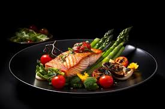
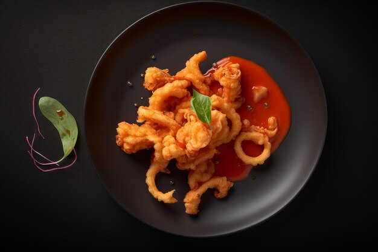
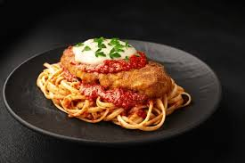
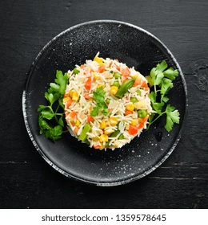
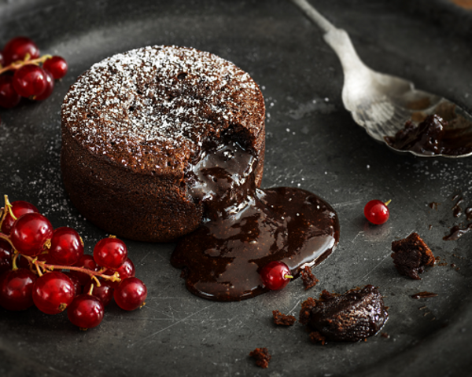
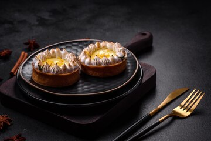

Our Appetizers :
Bruschetta Trio
A vibrant assortment of toasted artisan bread topped with three unique spreads:
classic tomato basil, creamy goat cheese with honey and walnuts, and zesty roasted red pepper hummus. Perfect for sharing!

Crispy Calamari
Tender calamari rings lightly breaded and fried to golden perfection, served with a side of tangy marinara sauce and a sprinkle of fresh parsley. A crunchy, flavorful start to your meal.

stuffed mushrooms
Juicy portobello mushrooms filled with a savory mixture of cream cheese, garlic, herbs, and breadcrumbs, baked until golden and topped with a drizzle of balsamic glaze. Earthy and delicious!

Our main courses :
Herb-Crusted Salmon
A succulent fillet of salmon coated with a blend of fresh herbs and lemon zest, baked to flaky perfection. Served with roasted asparagus and a quinoa pilaf, drizzled with a lemon-dill sauce.
Grilled Chicken Parmesan
Juicy grilled chicken breast topped with marinara sauce and melted mozzarella, served on a bed of spaghetti. Garnished with fresh basil and a sprinkle of Parmesan cheese for a comforting Italian classic.

Vegetable Risotto
Creamy Arborio rice simmered with seasonal vegetables, white wine, and a touch of Parmesan cheese. Finished with a hint of truffle oil and topped with microgreens for an earthy, indulgent dish.

Our Desserts :
Chocolate Lava Cake
A rich and gooey chocolate cake with a molten center, served warm with a scoop of vanilla bean ice cream and a drizzle of raspberry coulis. A decadent treat for chocolate lovers!

Classic Tiramisu
Layers of coffee-soaked ladyfingers and mascarpone cream, dusted with cocoa powder and served chilled. This Italian favorite offers a delightful blend of flavors and textures.

Lemon Tart
A buttery, flaky crust filled with a tangy lemon curd, topped with a light meringue and a sprinkle of powdered sugar. Refreshingly sweet and tart, it’s the perfect ending to any meal.
